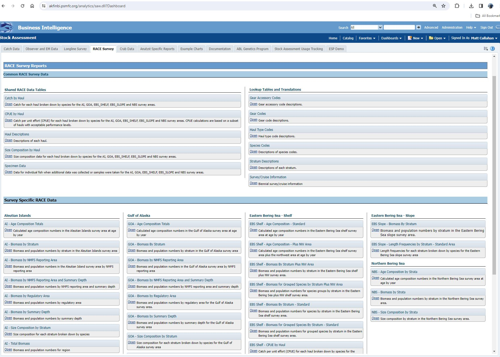

AKFIN
These data are used directly by stock assessors and are provided to The Alaska Fisheries Information Network (AKFIN).
The Alaska Fisheries Information Network
The Alaska Fisheries Information Network (AKFIN) is a regional program that consolidates and supports the processing, analysis, and reporting of fisheries data for Alaskan fisheries. AKFIN integrates this information into a single data management system using consistent methods and standardized formats. The resulting data enables fishery managers, scientists, and associated agencies to supervise fisheries resources more effectively and efficiently. The AKFIN database contains much of the data needed to complete stock assessments, including GAP trawl survey data. .
Data Access Options
Direct database connection If you are an AFSC employee you may access the AKFIN oracle database directly while on the NOAA network or VPN. Note that this is a separate database from the AFSC oracle database referenced above, and requires separate credentials. If you do not already have an AKFIN account you can request one here. NOAA IT will need to add AKFIN access to your tnsnames.ora file (They do this frequently). Once your connection is established data may be accessed through SQL queries using SQL developer, R, or python.
AKFIN Answers
(AKFIN Answers)[https://akfin.psmfc.org/akfin-answers/] is an Oracle BI tool used for distributing data to stock assessors and other users. Usernames and passwords are distinct from AKFIN direct database credentials. The distribution of GAP_PRODUCTS on AKFIN Answers is planned but not yet implemented. The RACE Survey tab on the stock assessment dashboard contains reports generated from now depreciated tables that predated the GAP_PRODUCTS tables. AKFIN will keep these reports for reference but they will not be updated 2024 onward.
Web Service
AKFIN has developed web services (apis) to distribute GAP data. Like the GAP_PRODUCTS schema, these are under active development. These do not require VPN or an oracle connection but they are protected by Oracle authentication, please contact matt.callahan@noaa.gov for information on how to get an api token to use this option.
The url structure is “https://apex.psmfc.org/akfin/data_marts/gap_products/gap_[base table name]” . For example “https://apex.psmfc.org/akfin/data_marts/gap_products/gap_biomass” is the base url to get data from the akfin_biomass table. Web services linked to large tables have mandatory parameters to reduce data download size. For example to get agecomp data for Bering Sea pollock in area_id 10 in 2022 you would use “https://apex.psmfc.org/akfin/data_marts/gap_products/gap_biomass?survey_definition_id=98&area_id=10&species_code=21740&start_year=2022&end_year=2022”.
If you’re using R to pull data through web services you might find the akfingapdata (pronounced akfin-gap-data not ak-eff-ing-app-data) R package helpful.
Cite this data
Use the below bibtext citation, as cited in our group’s citation repository for citing the data created and maintained in this repo (Alaska Fisheries Information Network (AKFIN), 2024). Add “note = {Accessed: mm/dd/yyyy}” to append the day this data was accessed.
[1] "@misc{GAPakfin,"
[2] " author = {{Alaska Fisheries Information Network (AKFIN)}}, "
[3] " institution = {{NOAA Fisheries Alaska Fisheries Science Center, Groundfish Assessment Program}},"
[4] " year = {2024}, "
[5] " title = {AFSC Groundfish Assessment Program Design-Based Production Data},"
[6] " howpublished = {https://akfinbi.psmfc.org/analytics/},"
[7] " url = {https://www.psmfc.org/program/alaska-fisheries-information-network-akfin},"
[8] " publisher = {{U.S. Dep. Commer.}},"
[9] " copyright = {Public Domain} "
[10] "}"